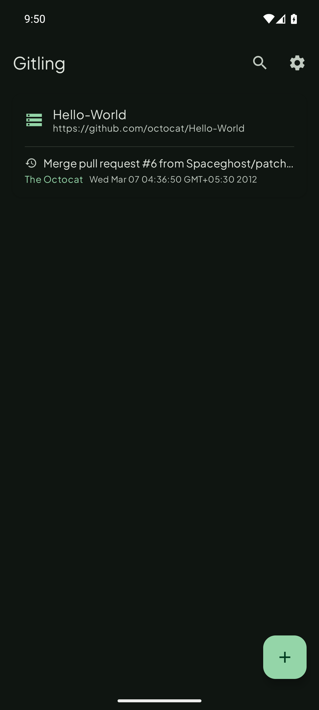
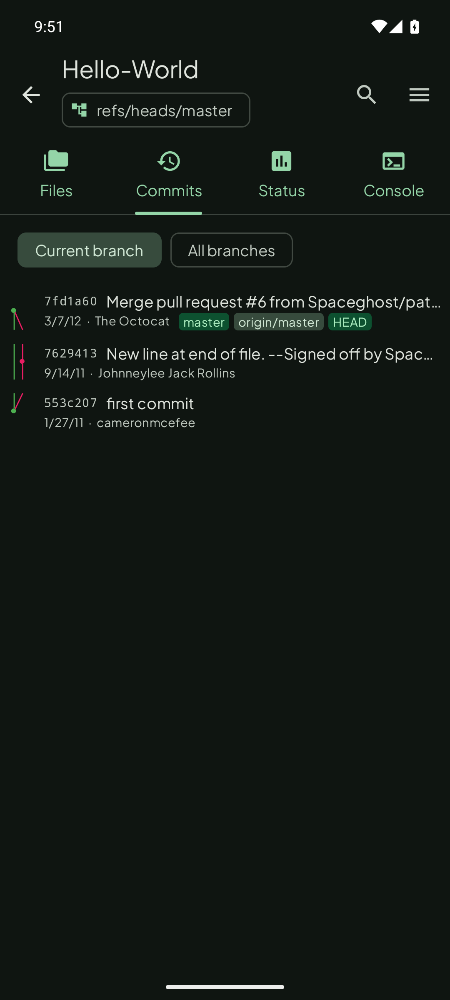
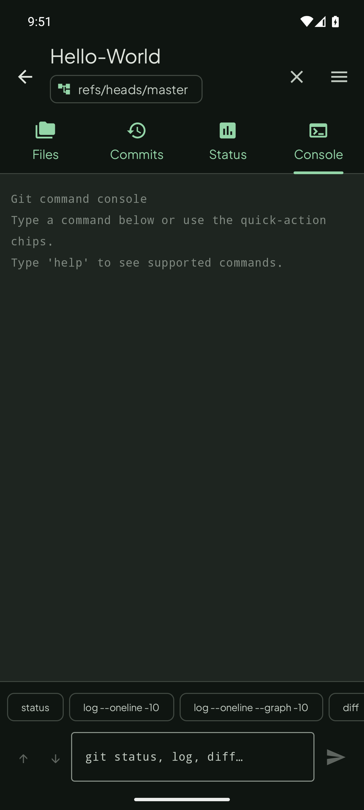
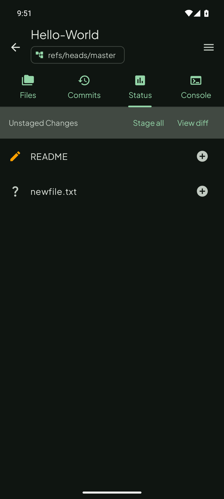
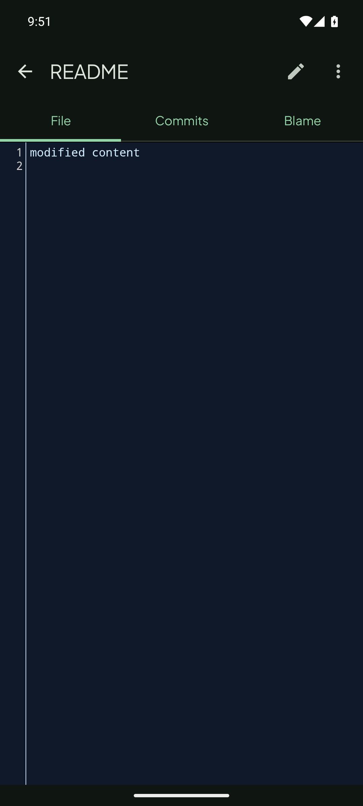
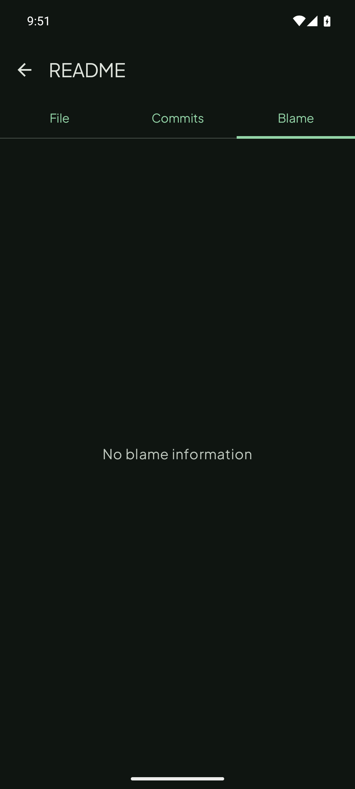
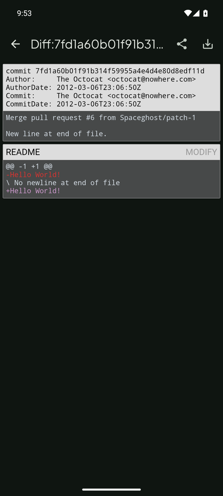
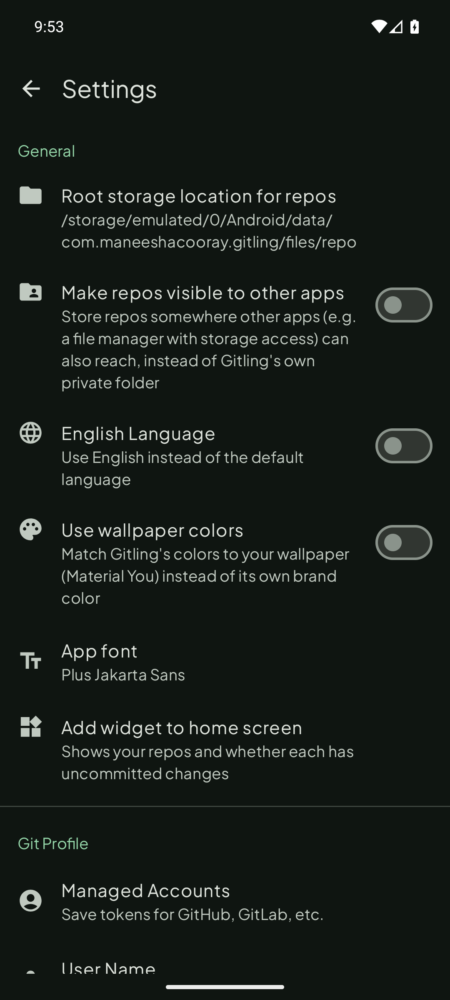

Why Gitling
Features
✓Clone, create, and delete local repositories
✓One-tap Connect with GitHub (OAuth Device Flow) — no manual token/password handling for GitHub remotes
✓Self-hosted Forgejo and Gitea support — add a Custom account with your instance URL
✓HTTP/HTTPS/SSH, including SSH with private-key passphrase
✓Username/password and personal access token authentication for any Git host
✓Full branch/merge commit graph with lazygit-style lane visualization and inline branch/tag/HEAD labels
✓Browse files and commit history,
git diff between commits✓File blame view — see which commit last touched each line
✓Git command console — run
status, log, diff, branch, stash directly from the Console tab✓Checkout, create, and merge local/remote branches and tags
✓
git status, staging, git rebase, git cherry-pick, git checkout <file>✓Stage All / Unstage All — bulk-stage or unstage every file from the Status screen in one tap
✓Submodule init and update
✓Search across repos, commit history, and file tree
✓Pin repositories and tag them with custom labels — filter by label from the repo list
✓Home screen widget showing repo status and dirty/clean indicator
✓Private key generation and management
✓Import an existing repository from device storage
✓Light/dark mode that follows the system, with a choice between a fixed brand color or wallpaper-based Material You dynamic color
Gitling doesn't include an internal text editor — to edit files, you'll need an editor app installed that supports opening files via Android's File Provider mechanism (most code/text editor apps do).
Screenshots
See it in action
{kind=link}

{kind=link}

{kind=link}

{kind=link}

{kind=link}

{kind=link}

{kind=link}

{kind=link}

Quick start
Getting started
Clone a remote repository
- Tap the
+button to add a new repository - Enter the remote URL (see formats below)
- Enter a local repository name — this is not the full path; Gitling stores all repositories under a common root directory (changeable in Settings)
- Tap
Clone - If required, you'll be prompted for credentials — or connect your GitHub account once in Settings to skip this for GitHub remotes
Create a local repository
- Tap the
+button to add a new repository - Choose
Init Localto create a local repository - Enter a name when prompted
Self-hosted Forgejo / Gitea
- Go to Settings → Accounts and tap Add account
- Choose Custom as the account type
- Enter your username, a personal access token, and your instance URL (e.g.
https://forgejo.example.com) - Credentials are applied automatically on clone, fetch, and pull from that host
URL formats
SSH
- Standard port (22):
ssh://username@server_name/path/to/repo - Non-standard port:
ssh://username@server_name:port/path/to/repo - A username is required.
HTTP(S)
https://server_name/path/to/repo
Download